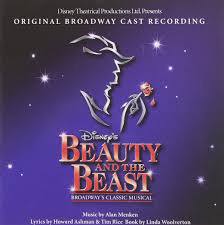

Jenny's Music Site
Favorite Artists At the Moment
Passions For Music
My passions for music go beyond pop culture and what is on the radio today. In my former studies, I was an acting major and was constantly around musical theatre and the music from those experinces taught me to apprecaite different kinds of music.The start of my acting career was rooted when I went to Broadway plays with my parents when I was younger, and I found passion through the music and the passion that was felt and seen on stage by the actors. Beauty and the Beast was my first Broadway play and I distinctly remember feeling so at home while watching the actors sing and dance. Ever since then, music meant more for me. It was a feeling that brought me intense joy and comfort. Musical theatre was my first passion I have ever had, and it has affected my musical interests today.
